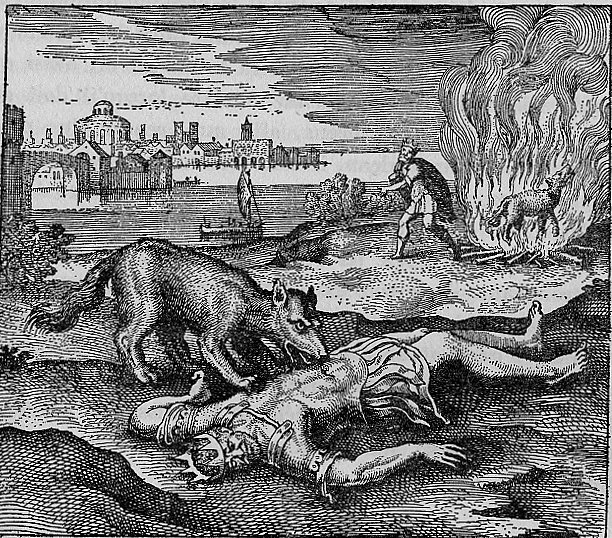

A wolf stands over the prostrate body of a crowned king, having devoured or killed him. In a second register or scene within the same plate, the wolf is shown consumed by flames on a pyre, and the king rises restored from the ashes or emerges renewed from the fire. The sequential narrative moves from predation to sacrifice to resurrection within a single image.
The wolf devoured the king, and after the wolf had been burnt, it returned the king to life.
Maier narrates a two-stage allegory: the wolf devours the king (antimony dissolves gold), then the wolf is burned, returning the king to life purified and renewed. He develops this as the central nigredo-to-rubedo sequence: the base, voracious substance (the wolf/antimony) must consume the noble but impure metal (the king/gold), and then the consuming agent it self must be destroyed by fire to liberate the purified king. The discourse draws on the metallurgical practice of antimony refining, where antimony sulphide is used to extract and purify gold from alloys. Maier cites this as one of the most practically grounded of all alchemical allegories, noting that the wolf's voracity is well known in natural history.
Emblem XXIV bears the motto: "The wolf devoured the king, and after the wolf had been burnt, it returned the king to life."
Maier narrates a two-stage allegory: the wolf devours the king (antimony dissolves gold), then the wolf is burned, returning the king to life purified and renewed. He develops this as the central nigredo-to-rubedo sequence: the base, voracious substance (the wolf/antimony) must consume the noble but impure metal (the king/gold), and then the consuming agent itself must be destroyed by fire to liberate the purified king. The discourse draws on the metallurgical practice of antimony refining, where antimony sulphide is used to extract and purify gold from alloys.
De Jong's source-critical analysis identifies the textual traditions Maier draws upon for this emblem.
The discourse draws on classical sources: Ovid, Metamorphoses X.560-704. The discourse draws on alchemical sources: Rosarium Philosophorum.
C. Morris Wescott: Part of the Alchemical King transformation sequence (XXIV, XXVIII, XXXI, XLIV). King undergoes transformation representing the Philosopher's Stone and Christ allegory.
C. Morris Wescott: Wescott provides detailed modal analysis of Emblem XXIV's fuga: the Dorian mode (representing the King/Sun) undergoes musical alteration through chromatic shifts to resolve in the Venusian Hypolydian centered on C, paralleling the King's transformation from Putrefaction to Albification.
C. Morris Wescott: Wescott reads Emblem XXIV's landscape as showing the King's simultaneous death (devoured by wolf/Saturn in foreground) and resurrection (walking toward river/water of Albification in background), with the circular building resembling an alchemical furnace.
H.M.E. de Jong: De Jong traces the dragon imagery to Basil Valentine's Practica cum Duodecim Clavibus and identifies the underlying chemistry as the dissolution of mercury by its own 'brother and sister' (Sol and Luna, gold and silver). She connects this to the Golden Fleece myth where the guardian dragon must be slain before the treasure is obtained.
Process: Putrefaction (Putrefactio)
Figure: Kronos / Saturn (Saturnus), Rex
Musical: Fugue (Fuga)
Part of the Alchemical King transformation sequence (XXIV, XXVIII, XXXI, XLIV). King undergoes transformation representing the Philosopher's Stone and Christ allegory.
Citation: Figures 1-4 discussion
Wescott provides detailed modal analysis of Emblem XXIV's fuga: the Dorian mode (representing the King/Sun) undergoes musical alteration through chromatic shifts to resolve in the Venusian Hypolydian centered on C, paralleling the King's transformation from Putrefaction to Albification.
Citation: pp. 3-4
Wescott reads Emblem XXIV's landscape as showing the King's simultaneous death (devoured by wolf/Saturn in foreground) and resurrection (walking toward river/water of Albification in background), with the circular building resembling an alchemical furnace.
Citation: p. 3
De Jong traces the dragon imagery to Basil Valentine's Practica cum Duodecim Clavibus and identifies the underlying chemistry as the dissolution of mercury by its own 'brother and sister' (Sol and Luna, gold and silver). She connects this to the Golden Fleece myth where the guardian dragon must be slain before the treasure is obtained.